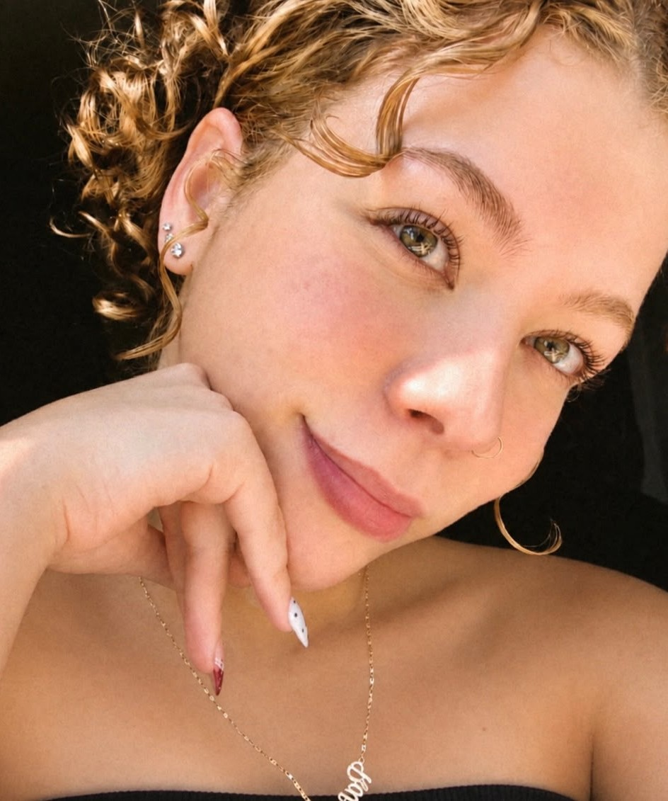

Programação
Python, JavaScript e C.
OLÁ, SEJA BEM-VINDA(O) AO MEU PORTFÓLIO!
Apaixonada por tecnologia, criatividade e inovação. Explorando o universo do desenvolvimento Front-End, UI/UX Design e Inteligência Artificial.
Technology & Design
♡CONHEÇA UM POUCO MAIS

Sou estudante de Ciência da Computação e estou construindo minha trajetória na área de tecnologia. Tenho interesse em desenvolvimento de software, design de interfaces e soluções inovadoras.
Gosto de unir criatividade e tecnologia para desenvolver experiências digitais intuitivas, funcionais e visualmente agradáveis.
Atualmente, estou aprimorando meus conhecimentos em programação, desenvolvimento Front-End, UI/UX Design e Inteligência Artificial.
Converse comigo! →MEU DESENVOLVIMENTO
Python, JavaScript e C.
HTML, CSS e JavaScript.
Figma, prototipagem e design de interfaces.
Explorando ferramentas e aplicações de IA.
Git, GitHub e Pacote Office.
Interesse em segurança digital e tecnologia.
MEUS TRABALHOS
LINGUAGEM C
Programa desenvolvido em C para realizar leituras de temperatura, identificar limites e analisar os resultados.
Ver projeto →UI/UX DESIGN
Prototipagem de uma interface de aplicativo de música, explorando identidade visual, usabilidade e experiência do usuário.
Ver projeto →LINGUAGEM PYTHON
O sistema permite cadastrar produtos, registrar entradas e saídas de mercadorias, consultar quantidades disponíveis e gerar relatórios completos do estoque.
Saiba mais →MINHA JORNADA
ENSINO SUPERIOR
Graduação em andamento.
Atualmente desenvolvendo conhecimentos em programação, algoritmos, desenvolvimento de software e tecnologia.
VAMOS NOS CONECTAR?